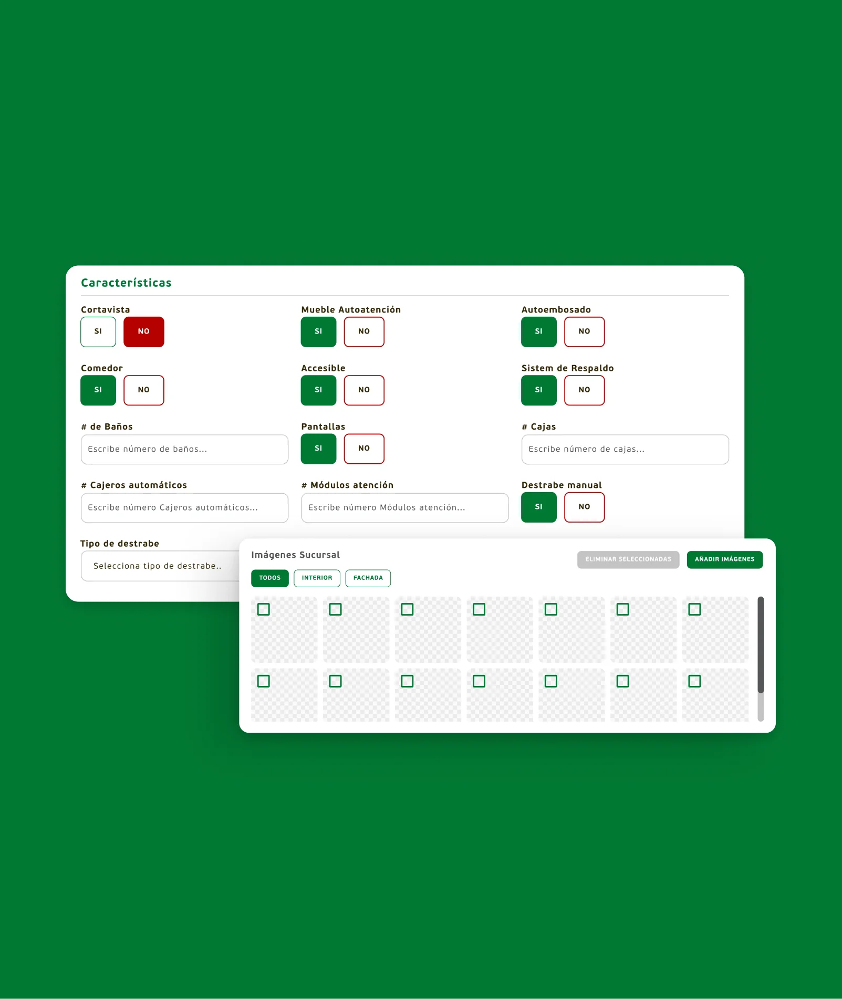
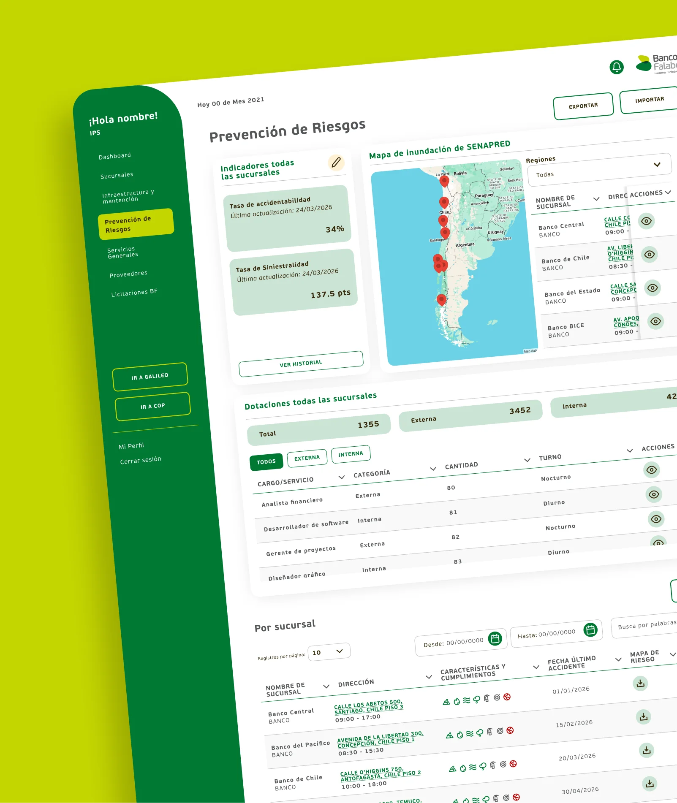

Alessandri
Rediseño de Plataforma Legal
UX/UI
Banco Falabella · Plataforma web interna
Tres áreas gestionaban las mismas sucursales con Excel separados. IPS reemplaza esa fragmentación por una sola ficha por sucursal con alertas proactivas y trazabilidad completa.
Infraestructura, Prevención de Riesgos y Servicios Generales gestionaban las mismas sucursales de manera paralela: cada área tenía su propio archivo Excel, su propia lógica y sus propios ritmos. No existía una versión única del estado de una sucursal. Acceder a información de otra área significaba saber a quién pedírsela y esperar.



El modelo de Excel paralelos no era solo un problema de herramientas — era un problema de coordinación y de detección tardía:
Acceder a la información era engorroso: había que saber qué archivo abrir y pedírselo al área dueña.
Los archivos no estaban al día y no quedaba registro de quién cambió qué.
Las carencias, daños y documentos por vencer se detectaban tarde, de forma reactiva.
Las tres áreas trabajan en conjunto, pero sin un espacio común para coordinarse por sucursal.
Documentos dispersos; difícil saber qué tiene cada sucursal.
Indicadores calculados a mano; sin histórico consolidado.
La arquitectura gira en torno a la sucursal: cada área tiene su listado con las columnas que le importan, y todas convergen en una ficha única con una pestaña por área.
Dashboard
KPIs de red (ubicaciones, contratos de arriendo, m² totales, canon total), top regiones con mapa, indicadores de dotación, accidentabilidad y siniestralidad.
Panorama de la red en una pantalla; badge "por vencer" en contratos como primera alerta.
Sucursales (listado)
Tabla maestra con código de oficina y nombre.
Punto de entrada común a las tres áreas.
Ficha — Info. Sucursal
Información general, características, información operacional (respaldo, continuidad, central de incendios, luz y agua), observaciones, dotaciones.
Datos base compartidos; última actualización con autor y fecha.
Ficha — Infraestructura
Clasificación, características en chips SÍ/NO, planos, RF, POM, TE1, galería interior/fachada.
Reemplaza carpetas y Excel de infraestructura; documentos a un clic.
Ficha — Prevención
Último accidente e investigación, PCI, plan de emergencias, mapa de riesgo, cumplimiento normativo, protocolos MINSAL (CEAL/SM, PREXOR, TMERT, RUV).
Riesgo y cumplimiento de la sucursal en una vista, con historial por bloque.
Ficha — Servicios Generales
Arriendo (canon UF, ratio UF/m², vencimiento, renovación), documentación con historial, cláusulas, información financiera, servicios (aseo, valija), uniformes.
Contratos y fechas críticas visibles; trazabilidad de cambios de canon.
Infraestructura (listado)
Sucursales con características en iconos y descarga directa de planos, RF y POM.
Comparar sucursales y bajar documentos sin entrar a cada ficha.
Prevención (listado)
Indicadores de red editables, mapa de inundación SENAPRED por región, dotaciones, tabla con fecha de último accidente y mapa de riesgo por sucursal.
Vista de red para priorizar sucursales con riesgo.
Servicios Generales (listado)
m², canon UF, ratio UF/m², fecha de vencimiento, filtro por rango de fechas.
Detectar contratos próximos a vencer en toda la red.
Proveedores
Maestro filtrable por tipo de servicio y área responsable, contrato vigente, subcontrato.
Un registro de proveedores compartido entre las tres áreas.
Licitaciones BF
Categoría, área, fechas de inicio y término, bases descargables.
Seguimiento de licitaciones fuera de correos y planillas.
Las alertas convierten datos estáticos en señales accionables. Punto de entrada: campana de notificaciones en el header de todas las pantallas.
Sin sistema de respaldo, sin continuidad operacional, sin comedor, sin destrabe manual, riesgos asociados.
Chip rojo "NO" con icono; chip verde "SÍ" cuando cumple.
Último accidente registrado, investigación adjunta, observaciones pendientes, riesgos naturales (inundación/cota 30, volcánico, sísmico, aluvión, incendio).
Bloque de accidente con historial; tarjetas de riesgo con estado; caja de observaciones.
Contratos de arriendo, fecha término, aviso de renovación, patente, certificados.
Badge amarillo "X por vencer" en dashboard; columna de vencimiento en listados.
% por norma (CMF/bancaria, seguridad, estructura, documentos, servicios), protocolos MINSAL.
Semáforo rojo / amarillo / verde con porcentaje o estado.
Una ficha con pestañas por área (Info. Sucursal, Infraestructura, Prevención, Servicios Generales) en vez de tres sistemas paralelos. Cada área ve su información y la de las otras sin pedirla.
Infraestructura ve características y documentos; Prevención, fecha de accidente y mapa de riesgo; Servicios Generales, canon y vencimientos. Mismo componente de tabla, distinta lectura.
Las características SÍ/NO usan color + icono + texto, legibles de un vistazo y sin depender solo del color. Cumple accesibilidad WCAG AA.
Porcentajes y estados en rojo/amarillo/verde para priorizar dónde actuar. Acompañados siempre de texto o número para no depender únicamente del color.
"Últ. actualización – autor – fecha" en cada ficha y modales de historial por bloque (accidentes, cumplimiento, protocolos, infraestructura, documentos). Responde directamente al dolor: "los Excel no estaban al día".
Facilita la migración desde los Excel existentes y baja la resistencia al cambio. Los equipos pueden seguir exportando para sus flujos sin perder la plataforma como fuente de verdad.
Descargar y previsualizar planos, permisos y contratos directamente desde listados y fichas, sin navegar a otra herramienta ni pedir acceso a otra área.
Estilos de texto (h1–h6, subtítulos, párrafos, botón, detalle), paleta (principales, secundarios, botones, estados) y librería de componentes con iconografía por característica: comedor, accesible, respaldo, baños, destrabe, reciclaje, extintores, sísmico, cajeros.
Compañía Nnodes
Líder de proyecto Franco Restaino
Product Designer Erika Pinedo
Desarrolladores Juan Hayashi
* Todos los derechos reservados